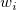
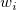
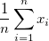
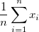
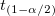

Dialog Spaltenstatistik
DescStats-Dialog
Hilfreiche Informationen
Neu berechnen
Siehe Details zu den Optionen der Neuberechnung unter Analyseergebnisse neuberechnen.
Eingabe
Leeren Datensatz ausschließen
Aktivieren Sie das Kontrollkästchen, um einen leeren Datensatz aus der Berechnung auszuschließen.
Textdatensatz ausschließen
Aktivieren Sie das Kontrollkästchen, um einen leeren Textdatensatz aus der Berechnung auszuschließen.
Eingabedaten
Legen Sie den Modus der Eingabedaten fest, indiziert oder roh.
| Unabhängige Spalten |
Jede Spalte wird als separater Datensatz bearbeitet. Es werden für jede von ihnen unabhängig voneinander statistische Operationen durchgeführt.
|
| Kombiniert zu einem einzelnen Datensatz |
Alle Spalten werden als ein Ganzes bearbeitet.
|
| Bereich1 |
Legen Sie den Datenbereich fest, für den diese Analyse durchgeführt werden soll:
-
Datenbereich
- Der Eingabedatenbereich
-
Gruppe
- Mehrere Gruppierungsspalten enthalten Gruppierungsinformationen, die in das Feld Gruppe eingefügt werden können. Verschiedene Gruppierungswerte weisen darauf hin, dass die Daten in den entsprechenden Zellen aus verschiedenen Gruppen sind. Sie können Gruppierungsspalten über Schaltflächen hinzufügen, entfernen und ordnen: Nach oben verschieben
 , Nach unten verschieben , Nach unten verschieben  , Entfernen , Entfernen  , Alle auswählen , Alle auswählen  , Auswählen , Auswählen  auf der Symbolleiste auf der Symbolleiste  . Die Gruppierungsspalten sind auf kategorisch gesetzt, falls die meisten Spaltenwerte Text sind. Sie können die Ausgabespalten ganz einfach neu ordnen. . Die Gruppierungsspalten sind auf kategorisch gesetzt, falls die meisten Spaltenwerte Text sind. Sie können die Ausgabespalten ganz einfach neu ordnen.
-
Gewichtungsbereich
- Der Bereich, der Gewichtungsinformationen enthält Der Wert in jeder Zelle legt die Gewichtung der entsprechenden Daten fest.
|
Merkmale
Momente
Angenommen,  ist die
ist die  -te Stichprobe und  die -te Gewichtung.
-te Stichprobe und  die -te Gewichtung.
| N gesamt |
Gesamtanzahl der Datenpunkte, bezeichnet mit n
|
| N fehlend |
Anzahl der fehlenden Werte
|
| Mittelwert |
Der (durchschnittliche) Mittelwert
 . Wenn es keine Variable Gewichtung gibt, wird die Formel reduziert auf . . Wenn es keine Variable Gewichtung gibt, wird die Formel reduziert auf .
|
| Standardabweichung |
^2/d}")
wobei 
Hinweis: In OriginPro hat  vier Optionen mehr, die im Zweig Varianzdivisor des Moments definiert sind. vier Optionen mehr, die im Zweig Varianzdivisor des Moments definiert sind.
|
| SE des Mittelwerts |
Standardfehler des Mittelwerts

|
| Unteres 95% KI des Mittelwerts |
Untere Grenze des 95%-Konfidenzintervalls des Mittelwerts
}\frac s{\sqrt{n}}")
wobei  der ") kritische Wert der Studenten-t-Statistik mit n-1 Freiheitsgraden ist. kritische Wert der Studenten-t-Statistik mit n-1 Freiheitsgraden ist.
|
| Oberes 95% KI des Mittelwerts |
Obere Grenze des 95%-Konfidenzintervalls des Mittelwerts
}\frac s{\sqrt{n}}")
wobei der kritische Wert der Studenten-t-Statistik mit n-1 Freiheitsgraden ist.
|
| Varianz |

|
| Summe |
 . Wenn es keine Variable Gewichtung gibt, wird die Formel reduziert auf . Wenn es keine Variable Gewichtung gibt, wird die Formel reduziert auf  . . |
| Schiefe |
Die Schiefe misst den Grad der Asymmetrie einer Verteilung. Sie wird definiert als
(n-2)}\sum_{i=1}^n w_i^{\frac 32}(\frac{x_i-\bar{x}}s)^3 ,\mbox{for DF}")
^3,\mbox{for N}")
^3,\mbox{for WVR}")
Hinweis: Wenn die WDF- oder WS-Methode ausgewählt ist, wird die Schiefe als fehlender Wert angegeben.
|
| Kurtosis |
Die Kurtosis zeigt den Grad der Peaks einer Verteilung an.
}{(n-1)(n-2)(n-3)}\sum_{i=1}^n w_i^2(\frac{x_i-\bar{x}}s)^4-\frac{3(n-1)^2}{(n-2)(n-3)},\mbox{for DF}")
^4 -3,\mbox{for N}")
^4 -3,\mbox{for WVR}")
Hinweis: Wenn die WDF- oder WS-Methode ausgewählt ist, wird die Kurtosis als fehlender Wert angegeben.
|
| Unkorrigierte Summe der Quadrate |

|
| Korrigierte Summe der Quadrate |
|
| Variationskoeffizient |

|
| Mittelwert Absolutabweichung |

|
| SD mal 2 |
Standardabweichung mal 2

|
| SD mal 3 |
Standardabweichung mal 3

|
| Geometrische Mittelwert |
 ^{\frac 1n}")
Hinweis: Gewichtungen werden für den geometrischen Mittelwert ignoriert.
|
| Geometrische StAbw |
Die geometrische Standardabweichung }") , wobei std für die ungewichtete Standardabweichung der Stichprobe steht. , wobei std für die ungewichtete Standardabweichung der Stichprobe steht.
Hinweis: Gewichtungen werden für die geometrische Standardabweichung ignoriert.
|
| Modus |
Der Modus ist das Element, das am häufigsten im Datenbereich auftaucht. Wenn mehrere Modi gefunden werden, wird das kleinste gewählt.
|
| Summe der Gewichtungen |
|
| Harmonisches Mittel |
Harmonisches Mittel
ohne Gewichtung: ^{-1}}n\right)^{-1}")
mit Gewichtung: ^{-1}")
wenn  oder Gewichtung negativ ist, wird Fehlende weitergegeben; wenn oder Gewichtung 0 ist, wird 0 weitergegeben. oder Gewichtung negativ ist, wird Fehlende weitergegeben; wenn oder Gewichtung 0 ist, wird 0 weitergegeben.
|
Quantile
Quantile sind Werte aus Daten, unter denen sich ein gegebener Anteil der Datenpunkte in einem gegebenen Satz befindet. Zum Beispiel befinden sich 25% der Datenpunkte in einem beliebigen Datensatz unter dem ersten Quartil und 50% der Datenpunkte in einem Satz unter dem zweiten Quartil oder Median.
Sortieren Sie den Eingabedatensatz in aufsteigender Reihenfolge. Angenommen ist das -te Element des neu geordneten Datensatzes
| Minimum |
}\,")
|
| Index des Minimums |
Die Indexnummer des Minimums im ursprünglichen (Eingabe-)Datensatz
|
| 1. Quartil (Q1) |
Erstes (25%) Quantil, Q1 Informationen zu Berechnungsmethoden finden Sie unter Interpolation von Quantilen.
|
| Median |
Median oder zweites (50%) Quantil, Q2 Informationen zu Berechnungsmethoden finden Sie unter Interpolation von Quantilen.
|
| 3. Quartil (Q3) |
Drittes (75%) Quantil, Q3 Informationen zu Berechnungsmethoden finden Sie unter Interpolation von Quantilen.
|
| Maximum |
}\,")
|
| Index des Maximums |
Die Indexnummer des Maximums im ursprünglichen (Eingabe-)Datensatz
|
| Interquartilbereich (Q3-Q1) |

|
| Spannweite (Maximum-Minimum) |
Maximum - Minimum
|
| Benutzerdefinierte Perzentil(e) |
Benutzerdefinierte Perzentile können berechnet werden.
|
| Perzentilliste |
Diese Option ist nur verfügbar, wenn Benutzerdefinierte Perzentil(e) aktiviert ist. Perzentile werden für alle aufgeführten Werte berechnet.
|
| Mittlere absolute Abweichung (MAD) |
Für einen univariaten Datensatz X1, X2, ..., Xn, wird MAD als Median der absoluten Abweichungen vom Median der Daten definiert:
|)\,")
das heißt, angefangen bei den Residuen (Abweichungen) vom Median der Daten, ist die mittlere absolute Abweichung MAD der Median ihrer absoluten Werte.
|
| Robuster Variationskoeffizient |
)/Median\,")
|
Extremwerte
Extremwerte werden angegeben. Extremwerte sind der höchste und der niedrigste Wert.

wobei n die Länge des Datensatzes ist.
Steuerung Berechnung
Gewichtungsmethode
Wählen Sie die Gewichtungsmethoden für die Eingabedaten.
Varianzdivisor des Moments
Die Berechnung des Varianzdivisors d wird gesteuert.
| Freiheitsgrade |
Freiheitsgrade

|
| N |
Anzahl der nicht fehlenden Beobachtungen

|
| WDF |
Summe der Gewichtungen (DF)

|
| WS |
Summe der Gewichtungen
|
| WVR |
 |
Interpolation der Quantile
Methoden zum Berechnen von Q1, Q2, und Q3:
Angenommen, das -te Perzentil ist y, gesetzt auf  , und angenommen,
, und angenommen,
wobei j der ganzzahlige Teil von np ist und g der Bruchteil von np. Verschiedene Methoden definieren das  Perzentil y wie im Folgenden beschrieben:
Perzentil y wie im Folgenden beschrieben:
| Empirische Verteilung mit Durchschnittsberechnung |
}+x_{(j+1)}),& \mbox{if }\ g=0 \\ x_{(j+1)},& \mbox{if }\ g>0 \end{cases}") |
| Nächster Nachbar |
Beobachtungszahl liegt am nächsten bei
, wobei k der ganzzahlige Teil ist von 
|
| Empirische Verteilung |
|
| Gewichteter Durchschnitt rechts |
Gewichteter Durchschnitt ist gerichtet auf
x_{(j)}+gx_{(j+1)}\,") , wobei , wobei }\,") angenommen wird als angenommen wird als
|
| Gewichteter Durchschnitt links |
Gewichteter Durchschnitt ist gerichtet auf
, wobei  angenommen wird als angenommen wird als
|
| Tukey Hinges |
Es sei:
}2,& \mbox{if n is odd} \end{cases}") }2,& \mbox{if m is odd} \end{cases}")
Dann haben wir:
}+x_{(k+1)}),& \mbox{if m is even} \end{cases}")
}\,")
|
|
Hinweis: Wenn Gewichtungen festgelegt sind, werden gewichtete Perzentile berechnet. Das p-te gewichtete Perzentil y wird mit der Funktion Empirische Verteilung mit Durchschnittsberechnung berechnet: }+x_{(i+1)}),& \mbox{if } \sum_{j=1}^i w_j=pw \\ x_{(i+1)},& \mbox{if } \sum_{j=1}^{i} w_j<pw<\sum_{j=1}^{i+1}w_j\\ x_{(1)},& \mbox{if } \ pw<w_1 \\ x_{(n)},& \mbox{if } \ pw<w_n \\ \end{cases}")
|
Ausgabe
 |
Seit Origin 2022 wird die Eingabespalte Format einer Gruppenspalte im Ausgabeblatt aufbewahrt (z. B. DescStatsQuantities). Wenn zum Beispiel die Spaltenstatistik der Datums-/Zeitdaten ausgegeben wird, wird die Spalte Format im Ausgabeblatt auf Datum-Zeit gesetzt (zuvor würde die Spalte als Text formatiert werden). Sie können das alte Verhalten durch Festlegen von @SCCSF = 0 wiederherstellen. Informationen zum Ändern des Wert einer Systemvariablen finden Sie unter FAQ-708 Wie ändere ich permanent den Wert einer Systemvariablen?.
|
| Diagramm |
Die Anordnung der sich ergebenden Zeichnungen wird festgelegt.
-
Diagramme in Spalten anordnen
- Legen Sie die Anzahl der Spalten fest, in denen die Ausgabediagramme angeordnet werden.
-
Diagramme des gleichen Typs in einem Graph anordnen
- Aktivieren Sie dieses Kontrollkästchen, um alle Diagramme des gleichen Typs in einem Diagrammfenster zu zeichnen.
|
| Datensatzidentifizierer |
Wählen Sie einen Identifizierer für die Quelldatensätze.
-
Identifizierer
-
Wählen Sie aus der Liste:
-
- Die Bereichssyntax wird verwendet.
- Der Langname der Arbeitsmappe wird verwendet.
- Der Arbeitsblattname wird verwendet.
- Der Spaltenlangname, wenn er existiert, wird verwendet, ansonsten der Kurzname.
- Der Kurzname der Spalte wird verwendet.
- Der Langname der Spalte wird verwendet.
- Die Einheiten der Spalte werden verwendet.
- Die Kommentare der Spalte werden verwendet.
- Verwenden Sie benutzerdefinierte Formate, um einen Datenidentifizierer zu definieren. Einzelheiten zu seiner Anwendung finden Sie unter Erweiterte Anpassungen des Legendentexts.
-
Identifizierer im Ergebnisblatt
- Der Datensatzidentifizierer wird in dem Ergebnisblatt verwendet.
|
| Berichtstabellen |
Ziel für Berichtstabellen
-
Mappe
-
Die Zielarbeitsmappe
- <Keine>: Berichtsblatttabellen nicht ausgeben
- <Quelle>: Die Quelldatenarbeitsmappe
- <neu>: Eine neue Arbeitsmappe
- <existiert>: Eine vorhandene Arbeitsmappe
-
Mappenname
- Die Zielarbeitsmappe Muss Quelle (nicht bearbeitbar), neu oder vorhanden sein (bearbeitbar), ansonsten leer.
-
Blatt
- Das Zielarbeitsblatt, immer <neu>
-
Blattname
- Der Name des Zielarbeitsblatts
-
Ergebnisfenster
- Legen Sie fest, dass der Bericht im Ergebnisfenster ausgegeben wird.
-
Skriptfenster
- Legen Sie fest, dass der Bericht im Skriptfenster ausgegeben wird.
-
Notizfenster
-
Legen Sie das Ziel des Notizfensters fest:
- <Keine>: Nicht in einem Notizfenster ausgeben
- <neu>: In ein neues Notizfenster ausgeben
|
| Merkmale |
Legen Sie das Ziel der Eigenschaften fest.
-
Mappe
-
Legen Sie die Zielarbeitsmappe fest.
- <Keine>: Keine Eigenschaften ausgeben
- <Quelle>: Die Quelldatenarbeitsmappe
- <Bericht>: Die Arbeitsmappe mit den Berichtstabellen
- <neu>: Eine neue Arbeitsmappe
- <existiert>: Eine festgelegte existierende Arbeitsmappe
-
Mappenname
- Die Zielarbeitsmappe Muss Quelle (nicht bearbeitbar), neu oder vorhanden sein (bearbeitbar), ansonsten leer.
-
Blatt
-
- <neu>: Ein neues Arbeitsblatt
- <Quelle>: Das Quelldatenarbeitsblatt
- <existiert>: Ein festgelegtes existierendes Arbeitsblatt
-
Blattname
- Der Name des Zielarbeitsblatts
|
| Optionale Berichtstabellen |
Legt fest, was in das Berichtsblatt ausgegeben wird.
-
Notizen
- Tabelle für Notizen
-
Eingabedaten
- Tabelle für Eingabedaten
-
Maskierte Daten
- Tabelle für maskierte Daten
-
Fehlende Daten
- Tabelle für fehlende Daten
|
Diagramme
| Histogramme |
In dem Ergebnisblatt wird ein Histogramm ausgegeben.
Wenn dieses Kontrollkästchen aktiviert ist, ist der Zweig erweitert. In diesem Zweig:
- Die Auswahlliste Datenhöhe bestimmt die Y-Achse des Histogramms.
-
- Anzahl: Y-Achse zeigt die Klassenanzahlen an.
- Relative Häufigkeit: Y-Achse zeigt einzelne Klassenanzahlen geteilt durch die Gesamtanzahl an.
- Dichte: Y-Achse zeigt die relative Häufigkeit (Anzahl der Beobachtungen in einer gegebenen Klasse/Einteilung) geteilt durch die Klassenbreite an.
- Das Kontrollkästchen Automatische Einteilung ist standardmäßig aktiviert. Einteilungsgröße, Anzahl der Einteilungen, Anfang, Ende werden automatisch gezeigt, wenn Automatische Einteilung nicht aktiviert ist.
|
Hinweis: Wenn die Eingabedaten sich in mehrere Spalten befinden, verwendet die Automatische Einteilung unabhängige Einstellungen für jede Spalte und daher können Einteilung und Achsenbereich sehr variieren. In diesem Fall zeigt Origin nicht bearbeitbare Grenzwerte für jede Spalte an. Wenn das Kontrollkästchen Automatische Einteilung deaktiviert ist, sind diese Elemente mit einem Startwert editierbar.
Wenn Sie den Wert von Einteilungsgröße, Start und/oder Ende bearbeitet haben, wird die Anzahl der Einteilungen automatisch berechnet.
Anzahl der Einteilungen und Einteilungsgröße können unter Schritt nach gewechselt werden.
Anzahl der Klassen = (Anfang-Ende) / Einteilungsgröße
|
|
| Boxdiagramme |
In dem Ergebnisblatt wird ein Boxdiagramm ausgegeben. Wenn die Eingabedaten eine Gruppenspalte haben, wird das Boxdiagramm entsprechend gruppiert. Wenn die Gruppenspalte auf Kategorisch gesetzt ist, wird das ausgegebene Boxdiagramm entsprechend der kategorialen Ordnung gezeichnet, die auf der Registerkarte Kategorien (Spalteneigenschaften) unter Gruppierungsbereich benutzerdefiniert angepasst wurde. |
 , wobei
, wobei  der i-te Wert des Gewichtungsdatensatzes ist.
der i-te Wert des Gewichtungsdatensatzes ist. , wobei
, wobei  der Wert in einer zugewiesenen Fehlerbalkenspalte ist.
der Wert in einer zugewiesenen Fehlerbalkenspalte ist. , wobei
, wobei  die Eingabedaten sind.
die Eingabedaten sind.